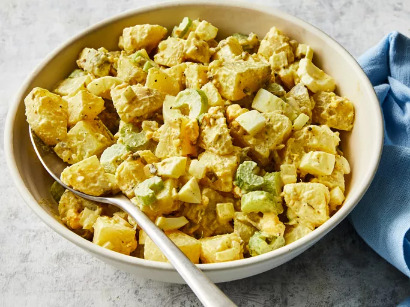

Home
Old-Fashioned Potato Salad

Description
A tradicional Creamy potato salad with eggs, celery and relish.
Perfect for making ahead to let the flavours develop
Ingredients
- 5 medium potatoes
- 3 large eggs
- 1 cup chopped celery
- ½ cup chopped onion
- ½ cup sweet pickle relish
- ¼ cup mayonnaise
- 1 tablespoon prepared mustard
- ¼ teaspoon garlic salt
- ¼ teaspoon celery salt
- ground black pepper to taste
Steps
- Gather all ingredients.
- Bring a large pot of salted water to a boil.
Add potatoes and cook until tender but still firm,
about 15 minutes.
- Drain, cool, peel, and chop potatoes.
- boil eggs for 12 minutes in boiling water.
- Remove eggs from hot water; cool, peel, and chop into chunks.
Combine potatoes, eggs, celery, onion, relish, mayonnaise, mustard, garlic salt,
celery salt, and pepper in a large bowl.
Mix together until well combined.
- Chill potato salad in the refrigerator before serving for best flavor results. Enjoy.